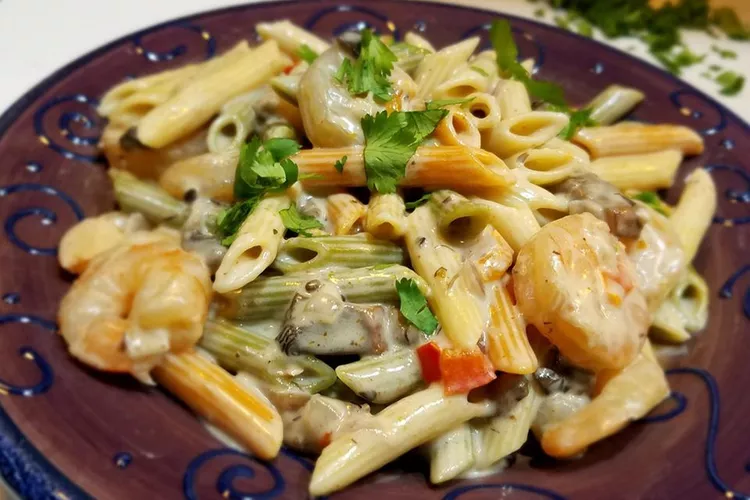

Peppered Shrimp Alfredo

Description:
Mushrooms, peppers, and shrimp are simmered in rich and creamy Alfredo sauce (the recipe uses jarred sauce, but you
could easily make your own), and tossed with penne pasta for a satisfying comfort food supper.
Ingredients:
- 12 ounces penne pasta
- ¼ cup unsalted butter
- 2 tablespoons extra-virgin olive oil
- 1 onion, diced
- 1 red bell pepper, diced
- 8 ounces portobello mushrooms, diced
- 2 cloves garlic, minced
- 1 pound medium shrimp, peeled and deveined
- 1 (15 ounce) jar Alfredo sauce
- ½ cup grated Romano cheese
- ½ cup heavy cream
- 1 teaspoon cayenne pepper, or more to taste
- salt and ground black pepper to taste
- ¼ cup chopped flat-leaf parsley
Instructions:
-
Bring a large pot of lightly salted water to a boil. Add penne and cook, stirring occasionally, until tender yet firm to
the bite, 8 to 10 minutes; drain.
-
Meanwhile, melt butter with olive oil in a saucepan over medium heat. Add onion; cook and stir until softened and
translucent, about 2 minutes. Stir in bell pepper, mushrooms, and garlic; cook over medium-high heat until soft, about 2
minutes.
-
Add shrimp; cook until firm and pink. Stir in Alfredo sauce, Romano cheese, and cream; bring to a simmer, stirring
constantly, until thickened, about 5 minutes.
-
Season with cayenne pepper, salt, and black pepper. Stir in penne. Sprinkle servings with parsley.
Home